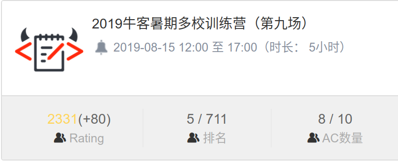

最终，还是没能成为英雄呢。
这就算是，暂时退役了吗？
回忆起整个大一上的 ICPC 生涯，也是感慨万千呢。
季尾结算
Team Dodo Kindergarten From Xi’an Jiao Tong University
- 2019.10.12-13 CCPC 哈尔滨 Rank 3
- 2019.11.09-10 ICPC 南昌 Rank 20
- 2019.11.17-17 ICPC 沈阳 Rank 10
- 2019.12.14-15 ICPC EC Final Rank 10+
没想到首战 CCPC 哈尔滨真的就成为了本赛季发挥最好的赛区。最后还是无缘 World Finals 了呢。回忆起整个大一上的 ICPC 生涯，也是感慨万千呢。
吹响号角：暑期集训
2019年的暑假是我最忙碌的一个暑假。当时我们队伍已经确认下来了，而作为入坑时间较短、底子相对薄弱的选手，我也深知自己前进的道路任重道远。看到暑假网上举办的有牛客、杭电的多校训练赛，我便决定好好参加。7 月 18 日，我的暑假就结束了。回到学校，和业元一起一周参加四场训练，打比赛。每天我的生活就是临时宿舍-机房-食堂三点一线，想起来也算十分充实。每天我们都会尽力把前一天所有题目都搞懂，并且代码实现，忙得不亦乐乎，而最让我欣喜的是我也时常能 A 掉一些相对较难的题，以及在比赛中“捡漏”。而在坤上完托福课和我们一起打比赛时，在牛客多校取得的一次第五名更是使我们感到兴奋不已。通过自己的实力拿到了奖励的 bilibili 抱枕和购物卡，我们真是感觉开心极了~我们也因此把出线 World Finals 作为区域赛的一大目标。

踏上征程：CCPC 哈尔滨
欢乐的暑假，轻松的军训终于结束，新学期开始了。新来的同学们许多都沉醉在这自由开放的新环境中，可是我们队可不能这样，要继续保持例行训练。转眼间就开始选赛区了，就要为了不和期中考试冲突，我们放弃了徐州与银川；由于香港动乱，自然没有考虑香港；由于一些原因以及数学竞赛，我们没有考虑南京。于是我们选择了南昌和沈阳，并且把和 CCPC Final 冲突的沈阳视为希望之花，视为保底赛区。在所有比赛之前，我们参加听说“高手如云”的 CCPC 哈尔滨站，对我们的实力找个定位。
9 月和 10 月，对我们来说一定就如同一部缤纷多彩的交响曲吧。坤拿到了托福超级高分，和我翘课在上海银联参加比赛，快乐旅游。我和业元参加了大学生数学竞赛，也意外地获得了一等奖。平时训练仿佛也是顺风顺水，哈尔滨之旅也颇有梦幻色彩。凌晨 4 点起来，换上羽绒服赶飞机，在东北林业大学博物馆参观，就连正式赛也是顺风顺水，多线程、高效率、完全没卡题的前三个半小时使我们坐稳了季军的位置，而最后一个半小时有两道题可以做，不幸由于我写挂了以及策略问题都没能通过。但这并没有影响这交响曲的主旋律：原来区域赛也没那么难！在首战捧杯的欢呼声，在五彩缤纷的交响曲中，我们踏上了征程。
首度受挫：ICPC 南昌
自哈尔滨之后，我们觉得在区域赛拿下奖杯也不是难事，坤表示只想尽快去打一场区域赛。可是，10 月终于还是过去了。南昌 ICPC，我们最终以 116 分钟离场、连卡三题的一片混乱中收场。
B 题简单问题复杂化，简单 dp ，甚至暴力可过，可是我却提出了网络流的奇慢无比的做法，最后荣获 TLE
K 题启发式合并，而我们却选择写极为麻烦的点分治做法，最后也没写完
D 题坤写了复杂度稍微有点高的做法，惨遭 TLE
赛后：A 题不是可撤销并查集裸题吗？M 题规律不是很显然，不是自然数幂次和裸题？可做题太多了，可是我们为什么会卡在这几道上，想用如此大常数的算法过题？我也成功打出了后期零贡献，也没有进行平常喜闻乐见的捡漏工作。
魔鬼在人间：ICPC 沈阳
经过一周的紧张训练，调整状态，我们又踏上了沈阳的旅途。
尽管发挥还算稳定，可是最后不明不白，就输了。各种偏题模板题，假题错题，算法导论原题遍布试题册。最后一题暴力可过，标程和假算法可过，可是我们吸取南昌教训，不愿写假算法。实际上回文级数的真做法也可以通过，可是当时不会。于是，尽管封榜后过了两题，我们仍然输在这一假题上。赛后复盘，我们认为由于当时我们不会回文级数，只要那道假题出现在试题中，就注定我们要输一道题或者输罚时。我们输在运气和科技上。
最后一搏：EC Final
终于，也只得来 EC 血拼出线名额了呢。
有很多强队，但这和我们发挥得怎样又有什么关系呢？
前期依然发挥稳定，还抢了签到题一血。
后期 D 较难写的 dp，G 麻烦模拟， J 小思维题。做出其中两道即可出线，可 D 题代码有小 bug，G 来不及改，J 又没仔细想，再次 148 分钟离场。
于是，ICPC2019，就这么结束了呢。
一周以来，我都仿佛不在状态。看到 EC 的结果，我也仿佛早已预料到一般，不知道现在自己是一种什么心态。我个人的问题究竟出在哪儿了呢？水平低，过于依赖队友。在逆风条件下没有想题能力，代码水平也不够。检查代码不仔细。我发现逆风时，我经常会处于不自信状态，不由自主地思想弃疗，总觉得题目很麻烦而不去想怎么做，总觉得自己做不出来。
提高水平，自然就可以提高自信。
ICPC2019 赛季，终究还是结束了。由于期末临近，终于还是要和 ICPC 暂别了。明年六月，只能仰望各大强队在 WF 的精彩表现了。
但是，从哪里跌倒，就从哪里爬起来。人在这里，信心还有，希望还在！ICPC2020 ，拭目以待！